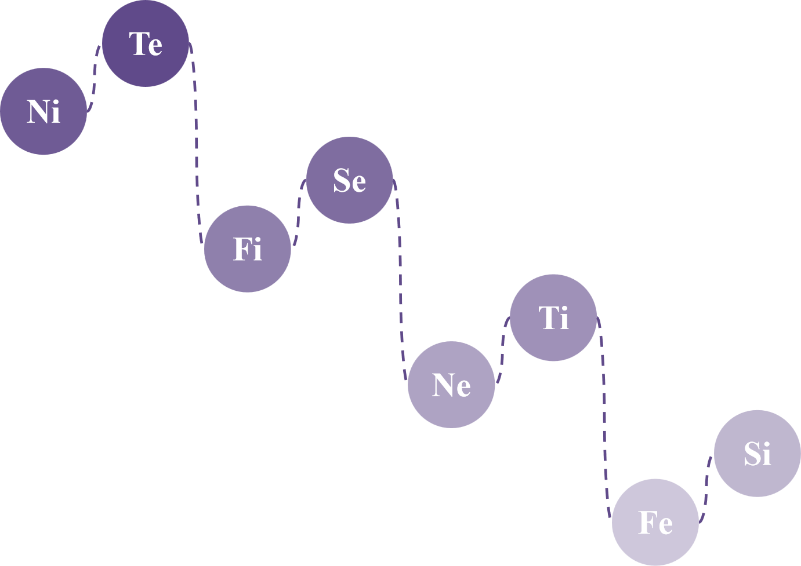
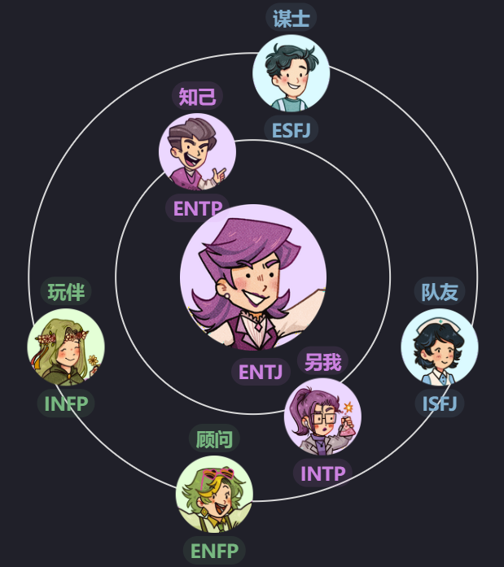

ENTJ
指挥官
ENTJ 是一群具有逻辑思维、分析能力和自信的“指挥官”，他们对成功充满动力，并渴望掌控局面。他们在识别和解决问题方面非常出色，尤其在企业环境中，他们能够基于外部客观信息做出迅速而果断的决策。他们喜欢与人交流并引领他们朝着共同的目标前进。他们对低效和错误可能会不耐烦，但也有着强烈的情感倾向。
Te和Ni是ENTJ的优势
认知功能和个体收集信息，做出决策并与外部世界互动的过程息息相关。 外倾思维（Te）和内倾直觉（Ni）是ENTJ的主导和辅助认知功能，是ENTJ的优势，意义和使命。
🌿 努力工作，玩得尽兴
🌿 雄心勃勃
🌿 领导人
🌿 寻求建设性批评
🌿 运动型
🌿 安静的E人
🌿 直率的
🌿 自豪的
🌿 果断
🌿 目标导向
🌿 战略思维
🌿 独立的E人
🌿 有动力
🌿 现实的N人
🌿 公正
主导的Te使ENTJ以结果为导向，并专注于高效地实现他们的目标。 辅助的Ni帮助ENTJ把握整体情况，并看到他们行动的长远影响。
ENTJ的认知功能

🔮Ni就像远见家，他可以通过对世界及对世界的潜在模式和法律的更深入的了解来逃脱和超越当前情况的局限性。它是直观的和有见地的，能够从有意识和潜意识的思想中收集和综合信息，以产生敏锐的印象和见解。它重视生活的解释和促进理解，并且在各个领域都有创造力。
如何发展Ni: 可视化、模式识别、未来计划
🤓 辅助功能被昵称为"好父母"，因为它通常受到早期青少年时期的良好教养的影响，它帮助主导功能实现其目标，并通过提供不同的观点来平衡它。它在青少年时期和成年早期逐渐发展起来。
辅助功能的内倾直觉 (Ni) 有助于ENTJ理解大局，并看到行动的长期影响。他们善于概念化思想，并在事件中看到模式、符号和含义。他们可能对人有敏锐的感知，并能准确预测结果。ENTJ重视相信自己的直觉并跟随直觉。他们倾向于关注整体目标而非个别细节，并可能对那些花费太长时间才能抓住重点的人感到不耐烦。他们可能还会委派任务，并且由于缺乏对细节的关注，可能无法准确估计任务的范围或时间。ENTJ可能没有详细的记忆，也不会纠结于过去，而是专注于改善他们的未来。
🤺Te就像利刃出鞘，准备解决挑战和困难。Te专注于使用明确的逻辑，包括标准化方法、测量、政策和程序来改善系统和操作。它与解决实际问题、发现和分类事实以及改善公认的想法有关。它重视客观数据和事实，而不是抽象的思维，并依赖于外部来源的声音和价值。Te是有组织、高效和有效的，并且可能被认为是坚定、直接和无情的。
如何发展Te：设定明确的目标、组织信息、解决问题
😊 主导功能是一个人最发达、最舒适和最本能的功能，它作为他们感知或判断世界的主要方式。它在童年时期形成，并成为人们的首要任务，因其通常是最健康和最强大的功能，因此被昵称为"英雄"。
ENTJ由外倾思考 (Te) 主导。他们以坚毅、批判、强烈和进取著妳，但一个更加平衡的ENTJ在日常互动中可能表现得正常且和蔼可亲。他们可能缺乏情感敏感性，倾向于严格的爱，但也可以担任照顾者角色。ENTJ以结果为导向，专注于高效地实现目标。他们不喜欢混乱，会努力维持秩序，经常发出指令或提供建议，并展示领导能力。他们可能更关注事情的完成而不是完成得有多好，并可能为实现目标而采取捷径。ENTJ组织有序，努力维护自己的系统，但环境可能不一定是完美的。他们可能抵制被控制或目标被认为是剒脵或低效的情况。
🗻Fi就像富士山一样，具有许多隐藏的力量。Fi探索和完善个人的品味和感受，从而有助于个人的独特感。Fi根据个人喜好为事物分配价值，试图与自己的内在情感标准和价值观保持一致，并专注于保持内在的情感和道德秩序。但是，Fi可能难以向外表达其情绪，可能对他人冷漠或无动于衷。
如何发展Fi：反思价值观、创造性表达、正念实践
🤪 劣势功能是无意识和被压抑的，以支持主导功能。它是你个性中你不太了解并且可能不愿意承认的“黑暗”方面。对于大多数人来说，这个功能往往在中年后变得更加明显。
内倾情感（Fi）在劣势位署上导致ENTJ通过外部成就和能力来定义自己的身份，并避免考虑如何保持真实。他们可能渴望与他人建立深层次的情感联系，但感觉无法实现，并因此压抑他们的Fi。不健康的ENTJ可能看起来反感情感，并合理化情感是为弱者而存在。他们可能也对展示弱点感到不安，并将自己认为的弱点隐藏起来。如果发展了Fi，ENTJ可以学会更具移情能力，并拥有更强的身份认同感。低Fi也可以让他们拋开情感，不顾他人的反对为自己或他人做最好的事情。
🔥Se就像火一样，寻找新的经历和刺激。Se专注于外部、具体的感官信息，并在当下寻找新的体验和刺激。它与收集有关直接环境的信息有关，并通过与其中的对象进行互动来充满活力。具有强大Se功能的人可能对自己当前的环境有很高的认识，并且很容易参与不仅仅是说话的活动。
如何发展Se：体育活动、感官经历、生活在当下
🤪 第三功能被昵称为“永恒少年”，因为它代表着我们内心那个永恒少年，并与潜意识的精神力量有着特殊的关系。它经常被用作一种防御机制，以保护自己免受不舒服的情绪和感觉，并平衡主导功能和辅助功能。这个功能通常在成年时期达到完全成熟。
第三位的外倾感觉 (Se) 有助于ENTJ实现他们的愿崇，并渴望冒险和刺激。他们可能注重表现并给人留下深刻印象以实现自己的目标。Se也可能使ENTJ冲动，导致他们喜欢打破常规不拘一格。
🎇Ne就像烟花一样，以创造力和可能性的爆发来照亮和扩展思想，引发新的联系和想法。Ne专注于探索情况或想法中潜在的可能性、含义和联系。它旨在以客观和未经过滤的方式理解情况的抽象、隐性品质。Ne具有创新性和开放性，通常以对新思想和可能性的渴望为特征。它可以是艺术、科学、机械或冒险的，并且通常对自我表达感到满意。
如何发展Ne：集思广益、探索新概念、联系想法
☝ 批评型父母功能具有超级批评和贬低的特点，经常导致自己或他人感到被拒绝。它可能受到触发器的触发，这些触发器激活了小丑功能。
辅助内倾直觉 (Ni) 使ENTJ能够拥有丰富的想象力和对未来的展望，他们也对事物的实际发展有强烈的感知。ENTJ利用这种能力来提供指导。然而，当他们的知识和权威受到挑战时，他们可能会变得易怒和批判，通过他们批判位的外倾直觉 (Ne) 的视角找出他人观点中的错误。
🗡Ti就像十年磨一剑，不断地磨练和完善其逻辑。Ti使用逻辑来分析和检査技术、问题、概念或理论，以提高个人技能、方法和策略。Ti采用怀疑态度和还原的方法，并关注提出问题、创建理论并研究外部事实如何适合思想或理论的框架。
如何发展Ti：独立分析、逻辑难题、评估论点
🪞对立功能挑战主导功能，可能表现为消极行为，如被动攻击性行为或自我怀疑。它也可能投射到他人身上，导致不信任感。
对ENTJ来说，反对内倾思考（Ti）会在他的Te受到挑战时被激活。ENTJ可能会使用Ti来为他们的方法辩护，并捍卫他的观点以对抗反对意见。当面对批评和反对时，他可能变得固执，使用逻辑原则来否定对方的论点。
☀Fe就像太阳一样，变暖并为他人带来生命。Fe根据普遍的、客观的标准重视事物，并抑制个人观点。Fe致力于通过有效的沟通和社会智慧来建立和维持和谐关系。它很容易表达自己，有时可能会出现为真诚或假货。Fe们倾向于共识和稳定性，并可能在其信念中具有强烈的情感信念。
如何发展Fe：移情实践、小组动态、解决冲突
🪄 转化功能代表了我们性格中需要诚实来克服的缺陷。它经常被压抑，对我们来说很难理解或产生共鸣。
应对压力和自我不足感时，ENTJ 的劣势内倾情感（Fi）会激发转化性外倾情感（Fe）。它作为一种消极的内在声音，威胁着他们自我完整性。为了弥补在内倾情感（Fi）方面的弱点，ENTJ 可能会使用转化性外倾情感 ( Fe ) 来揭纵和摧毁故人，而不是检视自己的行为和感受以实现个人成长的改变。这阻碍了必要的内省和自我反思，而这在个人发展中是必要的。
🪙Si就像火中锻造的硬币，锻造的痕迹让它变得坚强。Si注意内心的身体感觉，并利用过去的经验评估新的体验。它可能导致一个古怪的、主观的观点，并且对他人似乎不合理。Si重视稳定性和对新经验或广泛体验的一致性，并且经常从经验中抽象出重要的要素，以了解新的经验。
如何发展Si：常规和计划、记忆练习、日记
🤡 小丑功能以狡猾、欺骗性行为和保护第三功能的愿望为特征。它可能在关系中引发混乱和冲突，并造成不适或困惑的感觉。然而，它也可以作为促进成长和个体化的催化剂，通过打破自我限制的结构和创造新的选择。
ENTJ 类型的人可能会觉得强烈的内倾感觉(Si)有些滑稜可笑。他们可能认为对周围环境的挑剔或对过去的沉迷是隶靠的。然而，接受内向感知的价值可以带来更深入的人际关系和从过去经验中学习的机会。它还有助于建立健康的生活规律和关注身体健康。通过平衡对目标的关注和对细节的重视， ENTJ 可以改善生活的各个方面。
Ni
Te
Fi
Se
Ne
Ti
Fe
Si
哪些类人格与我最适配
作为ENTJ，你与INTP和ENTP自然产生共鸣，并且很可能与ISFJ、ESFJ、INFP和ENFP进行有趣的对话。

.webp)
.webp)
.webp)
.webp)